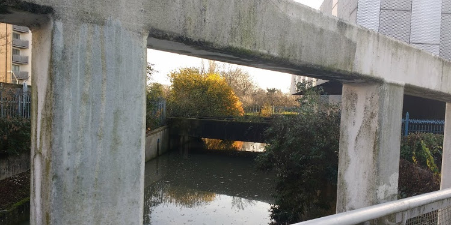

Introduction
Brookmill Bridge crosses the creek adjacent to the Stephen Lawrence Centre and links the Broadway Fields path under the DLR, to Brookmill Park! It's a good location to look out onto the Ravensbourne river as it flows along the concrete slot on its way past Broadway Fields and under Deptford Bridge. The driverless trains pass by every 10 minutes on the way from Lewisham to London City airport or Bank in central London.
Please post your story or questions to brookmillbridge@deptfordcreek.net